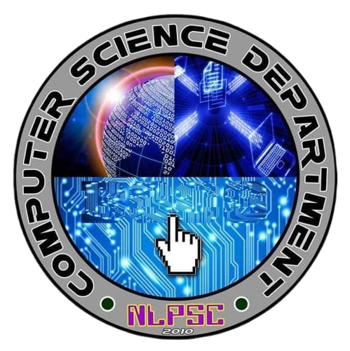

|  | ||
| NORTH LUZON PHILIPPINES STATE COLLEGE | ||
| San Nicolas, Candon City, Ilocos Sur, 2710 | ||
This course has the following modules based on the prototype syllabus given in CMO 25, s. 2015.
This module aims to introduce to you the concept of applications development and emerging technologies, how they developed and how it is differentiated with existing and developing technologies. It also covers the potential applications of these ET along education, business, health and society. Moreover, Industry 4.0 and smart factory are likewise introduced in this module.
This module aims to deepen your understanding about requirements analysis and modeling. The knowledge area is concerned with the acquisition, analysis, specification, validation and modeling of software requirements. It presents the major categories of software requirements, techniques of gathering requirements, the characteristics of good requirements, and modeling user -defined requirements.
This module aims to strengthen your technical know-how on how software designs principles and patterns were implemented from simple to more complex software solutions. In this module, you will be introduced to design principles and patterns, emphasizing on the SOLID principle and design patterns catalogs as applied in some object-oriented systems.
This module aims to present to you some developmental concepts and tools along software design and developments. This module gives emphasis on types of prototypes, phases of prototype development and designing prototypes of web, mobile, and business information systems.
This module aims to impart understanding on the conduct of software testing and deployment. In this module, it highlights types of software testing, areas for system testing, and developing a test plan. Likewise, it presents concepts about software deployment process and areas for consideration for a deployment plan in preparation for the development of a deployment plan template.
This module aims to deepen your understanding about ethical and legal issues in the light of applications development and emerging technologies. Specifically, it presents understanding between ethics and law, IT professional code of ethics, various ethical and legal considerations within the computing environment.